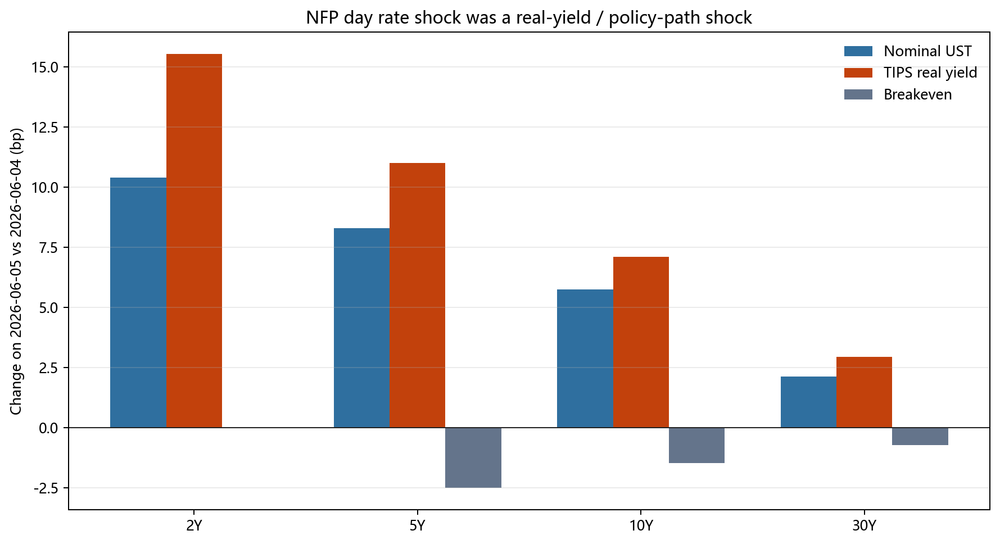
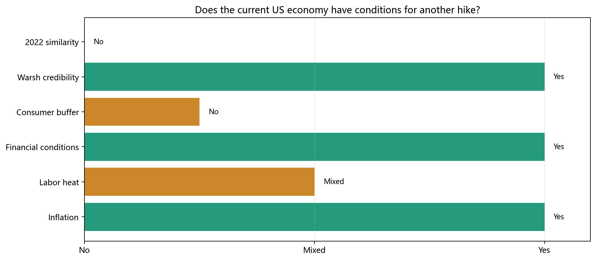

日期：2026-06-06 版本：institutional working report, native WIRP calibration added 2026-06-07 核心数据：Bloomberg BQuant / Bloomberg WIRP / Fed Funds futures / UST-TIPS-BE / BLS / BEA / FRED
一页结论
- 未来1年再加息不是近月基准，但已经是必须定价的右尾风险。 6月5日NFP后，Fed Funds futures 的2027年6月隐含月均有效联邦基金利率为 4.070%，较2026年6月前端高 44.7bp，等价于约 1.8 个25bp政策动作；原生Bloomberg WIRP在2027年6月会议给出 4.053% 隐含利率、1.72 个25bp净加息。NFP当天12M futures path 上修 14.5bp，WIRP 2027年6月会议上修 13.5bp，而1M path只上修 0.5bp，说明冲击集中在6-12个月政策路径，而不是下一次会议立刻加息。
- 原生BBG WIRP把preliminary框架校准为“1-2次净加息已经进入路径中枢”。 Pricing date 2026-06-05 的WIRP显示，2026年6月17日会议的边际行动字段为 -0.8%，几乎不定价立刻加息；但到2026年12月会议已经累积到 1.03 个25bp净加息，到2027年6月会议累积到 1.72 个25bp净加息。这个导出不是target-range分布矩阵，不能精确反推出“至少一次/两次”的闭式概率，但它明确高于此前45-60%的主观至少一次加息框架。
- Warsh-Fed反应函数会把同样的数据解释得更鹰。 Warsh在2026-05-22正式上任并成为FOMC主席；他的确认材料和公开表态强调Fed独立性、价格稳定、缩小Fed非核心任务和缩表。由于市场原本期待Trump-Warsh组合带来更低利率，6月NFP后的WIRP重定价本质上也是一次“Warsh credibility test”：若通胀高于目标且信用/风险资产太松，新主席需要证明不会为了增长或政治压力提前宽松。
- 和2022最大的相似点不是就业，而是油价/地缘供给冲击重新进入通胀核心。 2022是Russia/Ukraine把能源、食品、航运和通胀预期一起推高；2026当前是Hormuz/中东供给扰动让Brent、汽油、柴油和航空燃油重新成为Fed reaction function的前台变量。EIA 5月STEO显示，4月Brent均价约117美元/桶、4月7日触及138美元/桶，5-6月基准预测仍在约106美元/桶；BLS 4月CPI显示energy同比+17.9%、gasoline同比+28.4%。
- 和2022最大的不同是政策起点和需求背景。 2022首次加息前后是NFP +678k、失业率3.8%、core PCE约5.4%、政策利率接近零；2026当前是NFP +172k、失业率4.3%、core PCE 3.3%、有效联邦基金利率3.6%。所以这不是2022式behind-the-curve追赶周期，而是“供给冲击 + 通胀粘性 + 金融条件过松”共同驱动的再校准风险。
- 美国现在具备有限加息条件，但不具备无约束持续加息条件。 通胀、油价、信用利差和Warsh信誉给了加息理由；劳动力降温、Michigan sentiment 49.8、saving rate 2.6%、30Y mortgage 6.48%限制了连续紧缩空间。油价若维持高位，会先拿掉降息，再把higher-for-longer变成基准；只有当能源冲击进入核心服务、工资和通胀预期时，才会把1-2次再加息从右尾推成路径中枢。
- 6月5日当天仍是real-yield/policy-path shock，不是通胀预期失控交易。 2Y UST +10.4bp、2Y TIPS real yield +15.5bp、5Y breakeven -2.5bp；SOX -10.3%、SMH -9.2%。这说明NFP当天市场卖的是高久期现金流和拥挤估值。真正需要警惕的是后续油价/CPI把交易从real-yield shock切换成stagflation shock。
- AI股票没有一个统一答案。 Hyperscaler和compute在bucket-specific框架下不是最贵的区域；最拥挤的是compute IP、connectivity、部分equipment、power/data center和部分ASIC/networking。ARM/ALAB等需要FY3后仍保持很高增长和稀缺性溢价；GOOGL更像capex ROIC show-me story，不是典型AI泡沫。
- 横截面数据支持估值拥挤解释。 6月5日个股回报与fair-premium相关性约 -0.43，与FY1-FY3销售CAGR相关性约 -0.52，与FY3 EV/Sales相关性约 -0.33。跌幅集中在“高增长、高远期性、above-DCF-range”的AI链条。
1. 未来1年美国加息可能性
1.1 官方事实与Fed反应函数
官方数据给出的组合是“足以拿掉降息、但尚不足以把持续加息作为基准”的宏观环境：
- BLS 2026-06-05就业报告：May NFP +172k，失业率4.3%，平均时薪同比3.4%。
- BEA 2026-05-29个人收入支出报告：4月PCE价格指数同比3.8%，核心PCE同比3.3%。这说明通胀仍高于Fed目标，且不是已经回到2%附近的环境。
- FOMC 2026-04-29声明维持联邦基金目标区间在3.50%-3.75%，并仍强调通胀“somewhat elevated”。
- 4月FOMC纪要显示，会前期权价格曾暗示到2027年一季度前加息概率约30%；6月NFP后，Fed Funds futures的12M路径又向鹰派方向上修。
消费和信用端没有显示衰退式破裂：
- 30Y mortgage rate：6.48%，日期 2026-06-04。
- Michigan sentiment：49.8，非常弱。
- Personal saving rate：2.6%，缓冲垫偏薄。
- HY OAS：2.74%，IG OAS：0.74%，信用利差紧，金融条件没有压力。
1.2 市场路径：不是近月加息，而是远端cut-removal
| Contract | Month | 2026-06-04 implied | 2026-06-05 implied | NFP-day shift | Slope vs Jun-26 front |
|---|---|---|---|---|---|
| FFM6 Comdty | 2026-06 | ||||
| FFU6 Comdty | 2026-09 | ||||
| FFZ6 Comdty | 2026-12 | ||||
| FFH7 Comdty | 2027-03 | ||||
| FFM7 Comdty | 2027-06 |
图1-3：



历史事件研究显示，6月5日的12M path shift是右尾事件：
| sample | metric | n | Event | Percentile |
|---|---|---|---|---|
| all_available_path | d_rate_bp_1m | 13 | ||
| all_available_path | d_rate_bp_3m | 15 | ||
| all_available_path | d_rate_bp_6m | 18 | ||
| all_available_path | d_rate_bp_12m | 24 | ||
| all_available_path | path_twist_12m_minus_1m_bp | 13 | ||
| full_horizon_path | d_rate_bp_1m | 13 | ||
| full_horizon_path | d_rate_bp_3m | 13 | ||
| full_horizon_path | d_rate_bp_6m | 13 | ||
| full_horizon_path | d_rate_bp_12m | 13 | ||
| full_horizon_path | path_twist_12m_minus_1m_bp | 13 | ||
| full_horizon_with_nfp_surprise | d_rate_bp_1m | 9 | ||
| full_horizon_with_nfp_surprise | d_rate_bp_3m | 9 | ||
| full_horizon_with_nfp_surprise | d_rate_bp_6m | 9 | ||
| full_horizon_with_nfp_surprise | d_rate_bp_12m | 9 | ||
| full_horizon_with_nfp_surprise | path_twist_12m_minus_1m_bp | 9 |
回归结果也说明，headline NFP surprise不是唯一变量；surprise + prior-month revision 对12M Fed path解释力更强。
| Sample | Predictor | n | Slope | R2 | Corr |
|---|---|---|---|---|---|
| 12m_available_with_nfp | nfp_surprise_100k | 20 | +11.5bp / 100k | 0.25 | 0.50 |
| 12m_available_with_nfp | revision_1m_100k | 20 | +18.1bp / 100k | 0.22 | 0.47 |
| 12m_available_with_nfp | surprise_plus_revision_100k | 20 | +11.9bp / 100k | 0.40 | 0.63 |
| full_horizon_with_nfp | nfp_surprise_100k | 9 | +8.7bp / 100k | 0.24 | 0.49 |
| full_horizon_with_nfp | revision_1m_100k | 9 | +17.9bp / 100k | 0.47 | 0.68 |
| full_horizon_with_nfp | surprise_plus_revision_100k | 9 | +9.8bp / 100k | 0.53 | 0.73 |
本次NFP的组合为：+84k headline surprise，加上+64k前月一修正，合计+148k。用full-horizon样本的简单回归，约对应15-16bp的12M path上修，和实际+14.5bp接近。
1.3 原生BBG WIRP校准：净加息不是尾部，而是路径中枢
reports/WIRP.xlsx 是Bloomberg WIRP原生导出，pricing date包括2026-06-04和2026-06-05，instrument为Fed Funds Futures。它不是此前无效的月均合成WIRP表；这里直接使用Bloomberg给出的#Hikes/Cuts、%Hike/Cut、Imp. Rate ∆和Implied Rate。
核心读数：
- 当前target rate：3.75%；effective rate：3.62%；2026-06-05 current implied O/N rate：3.622%。
- 下一次2026-06-17会议：WIRP implied rate 3.620%，边际行动字段 -0.8%。这确认“不是近月加息恐慌”。
- 2026-12-09会议：累积 1.03 个25bp净加息，implied rate 3.880%，边际行动字段 +40.0%。
- 2027-06-09会议：累积 1.72 个25bp净加息，implied rate 4.053%；较2026-06-04同一会议上修 13.5bp、0.52 个25bp动作。这个数字与Fed Funds futures 2027年6月合约的+14.5bp重定价方向一致。
| Meeting | 06/05 #Hikes/Cuts | 06/05 marginal action | 06/05 implied rate | 1D rate shift | 1D #H/C shift |
|---|---|---|---|---|---|
| 2026-06-17 | -0.01 | -0.03 | |||
| 2026-07-29 | 0.14 | +0.04 | |||
| 2026-09-16 | 0.44 | +0.16 | |||
| 2026-10-28 | 0.63 | +0.23 | |||
| 2026-12-09 | 1.03 | +0.36 | |||
| 2027-01-27 | 1.24 | +0.44 | |||
| 2027-03-17 | 1.53 | +0.47 | |||
| 2027-04-28 | 1.68 | +0.51 | |||
| 2027-06-09 | 1.72 | +0.52 |


校准后的判断：
- “未来12个月至少一次加息45-60%”不应再作为正式概率口径；native WIRP摘要导出显示，到2027年6月已经price in约1.7次净加息。更准确的说法是：市场路径中枢已从“是否加一次”移动到“加一次后是否还需要第二次”。
- 精确的“至少一次/至少两次”概率仍需要Bloomberg WIRP target-range distribution矩阵；当前导出给的是期望动作数和每次会议的边际行动字段，不能把它伪装成完整概率分布。
- WIRP并不支持“马上进入连续加息周期”：6月会议几乎不动，风险主要堆在2026年9月至2027年3月；2027年9月会议边际字段转为-66.0%，说明市场也在定价远端路径可能回落。
交易含义： 债券市场最脆弱的位置不是“下次会议加息”，而是6-12M路径继续上修；权益市场最脆弱的位置不是AI需求证伪，而是高估值AI链条的折现率和终端增长假设被同时下调。
1.4 Kevin Warsh反应函数：为什么同样的数据更容易被交易成右尾加息
Warsh不是这份报告里可以省略的背景变量，因为2026-06-05的市场反应发生在新主席刚上任后的信誉测试窗口。Federal Reserve官方履历显示，Kevin Warsh于2026-05-22出任Board Chairman，并担任FOMC主席；这意味着6月NFP之后的WIRP重定价已经是Warsh-Fed regime下的市场定价，而不是Powell末期的惯性定价。
我的理解是，Warsh反应函数有四个市场含义：
- price stability优先级更高。 Senate Banking材料围绕稳定物价、最大就业和Fed独立性；Warsh的QFR答复也把通胀责任明确放回Fed，强调要改进货币政策执行以确保价格稳定。这会降低市场对“新主席为了配合降息预期而容忍3%+ core PCE”的信心。
- AI/productivity叙事不等于可以无条件降息。 Warsh此前更愿意承认AI带来的潜在供给侧改善，但确认问答里也承认会根据“best available data”评估通胀和劳动力市场。也就是说，AI productivity是中期框架，不是当下PCE 3.8%、core PCE 3.3%时的免死金牌。
- 缩表/窄化Fed职能让金融条件更重要。 如果Warsh倾向减少Fed资产负债表对金融市场的常态支持，那么信用利差太紧、风险资产太热时，政策利率路径更容易承担“重新收紧金融条件”的任务。
- 政治压力反而提高hawkish reaction的信号价值。 在白宫希望更低利率的背景下，新主席若面对通胀反弹仍然维持或上修路径，市场会把它解读为Fed independence和price-stability credibility的信号。这解释了为什么NFP不是近月hike scare，却能把2027年6月WIRP implied rate推到4.053%。
投资含义： Warsh-Fed下，单月就业/通胀数据的阈值不是“是否足以马上加息”，而是“是否足以迫使新主席放弃降息叙事、重新建立价格稳定信誉”。6月5日满足后者，但尚未满足前者。
1.5 与上一轮加息周期比较：油价让2026更像供给冲击再校准，不是2022式启动
6月5日的NFP事件不能只看单月就业增量。和2022相比，当前最容易被低估的共同点不是劳动力过热，而是油价和地缘冲突重新把headline inflation、通胀预期和Fed信誉放到前台。不同点是政策利率起点、工资压力和消费者缓冲垫都显著弱于2022，因此它更像“供给冲击驱动的再校准风险”，不是从零利率追赶通胀的完整加息启动周期。
| Metric | 2022-03 first-hike context | 2023-07 last-hike context | 2026-06 current event | Read-through |
|---|---|---|---|---|
| NFP headline | +678k | +187k | +172k | 当前就业增量接近2023最后一次加息附近，远低于2022启动周期的过热修复。 |
| NFP surprise vs consensus | n/a | -13k | +84k | 当前hawkish shock来自surprise和前月上修，而不是绝对就业增量极端。 |
| Unemployment rate | 当前劳动力市场明显松于上一轮两个加息节点，不支持大幅连续加息作为基准。 | |||
| Average hourly earnings YoY | 工资通胀仍高于2%通胀兼容区间，但工资-价格螺旋压力弱于2022/2023。 | |||
| Headline PCE YoY | 当前headline PCE高于2023最后一次加息附近，说明能源冲击已经影响总通胀。 | |||
| Core PCE YoY | 核心通胀低于上一轮加息节点，但仍比目标高约1.3pp。 | |||
| Oil / geopolitical shock | Russia/Ukraine后Brent一度升至120美元/桶以上 | 能源价格正常化，不是政策主线 | EIA 5月STEO：4月Brent均价约117美元/桶，4月7日触及138美元/桶，5-6月基准预测约106美元/桶 | 这是最像2022的部分：供给冲击把headline和预期风险重新外生化。 |
| Energy CPI / gasoline | gasoline和能源是2022 headline CPI的重要推手 | 能源项转为拖累/低基数 | BLS 4月CPI：energy同比+17.9%，gasoline同比+28.4%、环比+5.4% | 油价已通过汽油和能源项进入消费者可见通胀，Fed更难“看穿”headline。 |
| Effective fed funds / policy rate | 0.08-0.20% | 3.62-3.63% | 当前不是zero-rate behind-the-curve环境；加息是再校准，不是追赶式启动。 | |
| Michigan sentiment | 62.8 / 59.4 | 71.5 | 49.8 | 当前家庭信心显著弱于上一轮，对连续加息构成政治和需求约束。 |
| Personal saving rate | 4.1% / 3.2% | 消费缓冲垫更薄；油价上涨对实际消费的挤压比表面就业数据更重要。 | ||
| HY OAS | n/a in local pull | 信用利差比2023更紧，说明金融条件没有替Fed完成收紧。 |

核心结论：
- 和2022相似的是油价和供给冲击，不是就业热度。 2022年3月启动时，劳动力市场处在疫情后重开和工资高增阶段，NFP +678k、AHE YoY 5.1%、core PCE 5.4%、政策利率仍接近零。当前就业和工资不支持同样的追赶式连续加息，但Hormuz/中东扰动让能源价格和headline inflation再次成为Fed信誉风险。
- 油价改变了“能不能降息”的门槛。 如果油价只是短期尖峰且breakeven/通胀预期稳定，Fed可以看穿一部分headline；但若Brent维持100美元/桶以上，汽油、柴油、航空燃油和物流成本会进入消费者预期、企业成本和部分核心服务，Fed就很难在headline PCE 3.8%、core PCE 3.3%时启动降息。
- 当前基准不是“重启加息周期”，而是“1-2次净加息进入路径中枢”。 WIRP到2027年6月累积1.72次25bp净加息，和这个比较框架一致：市场在price in供给冲击和通胀粘性的再校准，而不是2022式连续追赶。
1.6 油价/地缘冲突如何改变Fed路径
油价冲击对Fed的约束有三层：
- 直接headline effect。 汽油、燃油、电力直接推高CPI/PCE headline，且消费者对加油站价格高度敏感。
- 成本传导。 Diesel、jet fuel、冷链、包装、食品运输和航空票价会把能源冲击带入核心商品和服务。
- 通胀预期和工资谈判。 如果油价高位持续，消费者和企业看到的是生活成本再上台阶，而不是core PCE定义上的剔除项；这会迫使Fed更重视信誉。
因此政策路径的顺序应当是：
| 阶段 | 触发条件 | Fed path含义 |
|---|---|---|
| 第一阶段：拿掉降息 | 油价高位但core/预期尚未扩散 | cut-removal，近月不加息但远端路径上修 |
| 第二阶段：higher-for-longer成为基准 | Brent持续100美元/桶以上，gasoline/diesel高位，headline PCE维持3.5%+ | 6-12M path继续抬升，WIRP把1次加息作为中枢 |
| 第三阶段：真正re-hike | 能源冲击进入core services、工资、UMich通胀预期或breakeven | 1-2次再加息从右尾变成中心情景 |
6月5日当天仍更像第一阶段的就业驱动real-yield shock：5Y breakeven下行2.5bp，说明市场没有在当天交易通胀预期失控。但油价/地缘冲突使第二阶段和第三阶段的概率显著高于只看NFP时的判断。
1.7 美国现在有没有加息条件：有，但条件是有限的
| Condition | Current evidence | Score | Investment read |
|---|---|---|---|
| 通胀是否给加息理由 | PCE 3.8%，core PCE 3.3%，均高于2%目标；WIRP到2027-06已price in 1.72次25bp净加息。 | Yes | 足以拿掉降息，并支持一次保险性加息或更长时间higher-for-longer。 |
| 油价/地缘供给冲击 | EIA 5月STEO显示4月Brent均价约117美元/桶、4月7日触及138美元/桶；BLS 4月CPI显示energy同比+17.9%、gasoline同比+28.4%。 | Yes | 这是相对2022对比中最重要的新增鹰派变量；它提高headline和预期右尾。 |
| 劳动力是否过热 | NFP +172k，U3 4.3%，AHE YoY 3.4%；比2022/2023加息节点松很多。 | Mixed | 就业不差，但不是2022式过热；不支持连续100bp+紧缩作为中心情景。 |
| 金融条件是否宽松 | HY OAS 2.74%，IG OAS 0.74%；AI/semis此前估值拥挤，风险资产未表现出融资压力。 | Yes | 市场太松会削弱政策传导，增强Warsh-Fed维持鹰派路径的理由。 |
| 消费/资产负债表能否承受 | Michigan sentiment 49.8，saving rate 2.6%，30Y mortgage 6.48%。 | No/Mixed | 油价上涨会进一步挤压实际消费；加息可以被讨论，但连续加息会迅速撞上消费和住房约束。 |
| 政策信誉和Warsh反应函数 | Warsh 5/22/2026上任，强调独立、价格稳定、精简Fed remit和缩表；市场会把能源通胀反弹解读为新主席信誉测试。 | Yes | 同样的数据在Warsh-Fed下比Powell末期更容易被交易成右尾加息风险。 |
| 是否接近上一轮启动周期 | 2022首次加息时NFP +678k、U3 3.8%、core PCE 5.4%、政策利率约0；当前U3 4.3%、core PCE 3.3%、政策利率3.6%，但油价供给冲击更像2022。 | Mixed | 当前不是2022式落后曲线；但也不能被简化为普通cut-removal，因为油价让通胀分布右尾变厚。 |

监控框架：
| 变量 | 阈值 | 含义 |
|---|---|---|
| Brent | 持续 > 100美元/桶 | Fed难以降息，headline risk常态化 |
| Brent | > 120美元/桶 | 市场会交易stagflation tail |
| Gasoline CPI | 连续高MoM | 消费者通胀预期风险 |
| Diesel / distillate cracks | 高位不回落 | 物流、食品、核心商品传导 |
| 5Y breakeven | 明显上行 | 从real-yield shock转向inflation-expectation shock |
| UMich 1Y / 5-10Y expectations | 上行 | Fed无法看穿能源冲击 |
| Core services ex shelter | 不降反升 | second-round pass-through成立 |
| Payroll + wage | 继续强 | 油价冲击下仍有再加息能力 |
| HY OAS | 仍紧 | 金融条件没有替Fed收紧 |
| Consumer sentiment / saving rate | 继续恶化 | 限制连续加息空间 |
综合判断：
- 支持加息/更鹰路径的条件： core PCE 3.3%仍显著高于2%；headline PCE 3.8%和能源CPI说明冲击不只是统计噪音；HY OAS 2.74%、IG OAS 0.74%说明金融条件没有自动收紧；WIRP已经把2026年9月至2027年3月作为主要风险窗口。
- 限制连续加息的条件： U3 4.3%且2025年7月以来维持在4.3%-4.5%区间，AHE YoY 3.4%低于2022/2023；Michigan sentiment 49.8、saving rate 2.6%、30Y mortgage 6.48%说明家庭部门承压；油价越高，真实消费越容易被挤压。
- 政策结论： 现在美国经济有“再加一次或两次”的条件，尤其如果未来1-2个月core PCE、工资、breakeven或UMich通胀预期重新走强；但没有足够条件把100bp+持续加息周期作为基准。市场最应该防的是6-12M路径继续上修，以及油价把交易从real-yield shock切换为stagflation shock。
1.8 油价冲击对AI股票的额外影响
油价/地缘冲突对AI不只是“利率上行所以估值下修”，还有四条额外通道：
- 折现率通道。 Fed更难降息，5Y real yield更容易保持高位，长duration AI倍数承压。
- 能源成本通道。 Data center power、backup fuel、grid cost、electricity price上行，提高AI infrastructure的长期WACC和operating cost。
- 融资通道。 Power/data center/utility/project finance对10Y/30Y和credit spread更敏感，油价冲击若推升term premium，会直接压缩这些资产的DCF价值。
- 需求挤压通道。 汽油和食品价格占用消费者现金流，会影响广告、消费、云需求和企业IT预算的边际预期。
因此bucket排序要加一层能源敏感度：hyperscaler现金流强但AI capex ROIC门槛更高；compute基本面强但multiple受real yield压制；power infra需求逻辑更强但WACC风险也更强；software/apps若面对企业预算和消费挤压，AI monetization更难被提前资本化。
2. AI股票目前price in多少增长，合理吗？
2.1 方法：不用统一EV/Sales，用bucket-specific valuation
本报告使用三层指标回答“price in多少增长”：
- FY1-FY3 consensus sales CAGR：市场已经可见的近中期增长。
- Post-FY3 implied CAGR from terminal multiple：若FY3后要回到bucket合理终端倍数，收入还需要增长多少。
- Reverse DCF implied CAGR / above_dcf_range：在WACC、terminal growth、target margin、sales-to-capital假设下，当前EV是否能被测试区间内的FY3后增长解释。
above_dcf_range不是缺数据，而是当前假设下价格高于测试DCF区间上限。
2.2 Bucket结论
| Bucket | Consensus FY1-FY3 sales CAGR | Current primary multiple | Fair primary multiple | Premium / discount | Post-FY3 implied CAGR | Reverse DCF implied CAGR |
|---|---|---|---|---|---|---|
| Software Apps | ||||||
| Hyperscaler | ||||||
| Asic Networking | ||||||
| Compute | ||||||
| Hbm Memory | ||||||
| Compute Ip | n/a | |||||
| Connectivity | n/a | |||||
| Datacenter Reit | n/a | |||||
| Equipment | n/a | |||||
| Foundry | n/a | |||||
| Power Infra | n/a |

解释：
- Hyperscaler：整体相对fair multiple折价约11%，FY3后隐含增长约11.5%，低于近中期共识增长。问题不是“AI泡沫”，而是AI capex能否转化为ROIC和FCF。
- Compute：当前主倍数低于模型fair multiple，post-FY3 terminal hurdle不高；真正风险是产品周期和客户capex节奏，而不是简单估值极端。
- Compute IP / Connectivity：最拥挤。Compute IP相对fair multiple溢价约250%，FY3后隐含CAGR约43%；Connectivity溢价约166%，FY3后隐含CAGR约35%。这些名字不是没有增长，而是容错率极低。
- Equipment / Power infra / Data center：需求真实，但估值给了长期capex周期和低WACC的双重资本化；若实际利率继续上行，估值对订单好消息的弹性会下降。
- HBM/memory：表面倍数不贵，但mid-cycle terminal multiple必须保守。不能把景气高点利润永久化。
2.3 6月5日事件验证
| Bucket | n | Median 6/5 return | Median fair premium | Above DCF count |
|---|---|---|---|---|
| Compute Ip | 1 | 1 | ||
| Connectivity | 1 | 1 | ||
| Foundry | 3 | 3 | ||
| Equipment | 4 | 4 | ||
| Compute | 2 | 0 | ||
| Asic Networking | 3 | 2 | ||
| Hbm Memory | 3 | 1 | ||
| Power Infra | 5 | 5 | ||
| Software Apps | 6 | 2 | ||
| Hyperscaler | 5 | 0 | ||
| Datacenter Reit | 2 | 2 |

最弱个股如下：
| Ticker | Bucket | 6/5 return | Fair premium | Consensus CAGR | Post-FY3 implied CAGR | Reverse DCF |
|---|---|---|---|---|---|---|
| MRVL | Asic Networking | above DCF range | ||||
| MU | Hbm Memory | above DCF range | ||||
| ARM | Compute Ip | above DCF range | ||||
| ALAB | Connectivity | above DCF range | ||||
| INTC | Foundry | above DCF range | ||||
| STRL | Power Infra | above DCF range | ||||
| AMD | Compute | solved | ||||
| GFS | Foundry | above DCF range | ||||
| LRCX | Equipment | above DCF range | ||||
| AMAT | Equipment | above DCF range | ||||
| ORCL | Hyperscaler | solved | ||||
| KLAC | Equipment | above DCF range |


横截面结论：
- 6/5回报 vs fair-premium：-0.43。估值溢价越高，跌幅越大。
- 6/5回报 vs FY1-FY3 consensus CAGR：-0.52。市场卖的是增长duration和拥挤交易。
- 6/5回报 vs FY3 EV/Sales：-0.33。单一EV/Sales有解释力，但弱于bucket fair-premium和增长duration组合。
2.4 GOOGL与MRVL：两个不同问题
GOOGL FY3 EV/EBIT 17.82x，fair 16.84x，溢价约5.8%；FY1-FY3销售CAGR 19.7%，post-FY3 terminal implied CAGR 19.0%，reverse DCF implied CAGR 22.9%，状态solved。关键风险是AI capex是否能在Cloud、Search/YouTube monetization和长期FCF中兑现。
MRVL FY3 EV/EBITDA 23.49x，fair 21.30x，溢价约10.3%；FY1-FY3销售CAGR 42.1%，post-FY3 terminal implied CAGR 17.4%，但reverse DCF为above_dcf_range。市场并不只是price in未来两年高增长，而是在资本化custom silicon设计赢单的可持续性、客户集中度可控、margin和FCF转化可以长期维持。
2.5 投资结论
- 可持有/可逢回调优先研究： 现金流底座强、fair multiple不极端、AI capex ROIC有可验证路径的hyperscaler；已有FY3利润支撑且terminal hurdle不夸张的compute。
- 高质量但估值容错低： ARM、ALAB、ANET、MRVL、设备龙头和power/data center链。需要把收益来源拆成基本面兑现和估值压缩两部分。
- 周期性必须用mid-cycle： HBM/memory不能只看景气期EV/EBITDA或P/B，必须对终端倍数和库存/价格周期保守。
- 利率情景下的组合管理： 若12M Fed path继续上修，高duration AI要降低gross或用pair trade对冲；若WIRP显示加息概率没有继续上升，优先回补“现金流支撑强、6/5被动去杠杆”的AI名字。
数据真实性与限制
- 官方宏观数据：BLS Employment Situation 2026-06-05、BEA Personal Income and Outlays 2026-05-29、Federal Reserve 2026-04-29 FOMC声明和纪要、FRED mortgage/credit/consumer series。
- 市场数据：Bloomberg BQuant日频输出，主要包括UST/TIPS/breakeven、Fed Funds futures、AI个股价格和Bloomberg consensus-derived valuation inputs。
- 不使用此前无效的
FF_WIRP_LIKE_MEETING_PANEL_CSV。本版已加入reports/WIRP.xlsx原生Bloomberg WIRP摘要导出；精确target-range概率仍需完整分布矩阵。 - NFP历史样本短，尤其完整1M/3M/6M/12M结构从2025-06起；因此回归只作方向性和量级验证，不作精确政策模型。
- AI reverse DCF依赖WACC、margin、sales-to-capital和terminal growth假设；它适合比较拥挤度，不等同于目标价。
Sources
- BLS Employment Situation, 2026-06-05: https://www.bls.gov/news.release/archives/empsit_06052026.htm
- BEA Personal Income and Outlays, April 2026: https://www.bea.gov/index.php/news/2026/personal-income-and-outlays-april-2026
- Federal Reserve FOMC statement, 2026-04-29: https://www.federalreserve.gov/newsevents/pressreleases/monetary20260429a.htm
- Federal Reserve FOMC minutes, 2026-04-29: https://www.federalreserve.gov/monetarypolicy/fomcminutes20260429.htm
- FRED 30-Year Fixed Rate Mortgage Average: https://fred.stlouisfed.org/series/MORTGAGE30US
- Bloomberg WIRP export:
reports/WIRP.xlsx - Local BQuant/FRED outputs:
bquant_outputs/*.csv - Federal Reserve Board biography, Kevin Warsh: https://www.federalreserve.gov/aboutthefed/bios/board/warsh.htm
- Senate Banking Committee, Warsh nomination hearing materials, 2026-04-21: https://www.banking.senate.gov/newsroom/majority/chairman-scott-champions-kevin-warsh-as-next-chair-of-the-federal-reserve
- Senate Banking QFR responses from Warsh: https://www.banking.senate.gov/imo/media/doc/bhua_dems_combined_qfr_responses_from_warsh.pdf
- BLS Employment Situation, 2022-03-04 / 2023-08-04 / 2026-06-05 archived releases.
- BEA Personal Income and Outlays, February 2022 / July 2023 / April 2026.
- FRED series used for cycle comparison: FEDFUNDS, UMCSENT, PSAVERT, BAMLH0A0HYM2, PCEPI, PCEPILFE.
- EIA Short-Term Energy Outlook, May 2026 oil market disruption assumptions: https://www.eia.gov/outlooks/steo/report/
- IEA Oil Market Report, May 2026 supply disruption and inventory context: https://www.iea.org/reports/oil-market-report-may-2026
- BLS Consumer Price Index, April 2026 energy and gasoline components: https://www.bls.gov/news.release/cpi.htm
- Federal Reserve FEDS Notes, oil price shocks and inflation transmission: https://www.federalreserve.gov/econres/notes/feds-notes/oil-price-shocks-and-inflation-in-a-dsge-model-of-the-global-economy-20240802.html